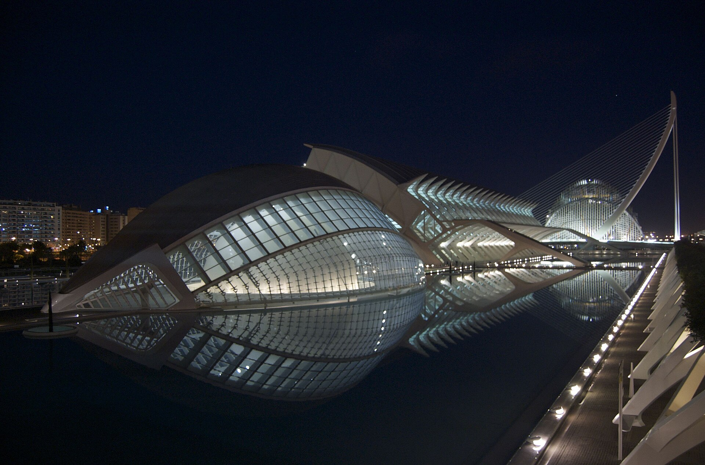

Valencia · 5-day family itinerary
One base in the city centre, a morning at the Central Market, and the Oceanogràfic and the science museum on different days.

Photo: Riverac, Ciutat de les Arts i les Ciències (Valencia, Spain) 01, CC BY 2.0, via Wikimedia Commons.
_01.jpg){kind=link}
Before you commit
This illustrative route keeps four nights in central Valencia. The City of Arts and Sciences is two days, not one stop. The items below were not live-checked for a chosen date.
Stay near Xàtiva or Colón. Use metro lines 3 or 5 for the airport. Use tram line 10 for the Oceanogràfic. Do not put the aquarium and the science museum on the same day.
One anchor each day. The market buys until 15:00 and is not a Sunday plan. The complex’s own FAQ allows about 4 hours for the Oceanogràfic and about 3 hours for the museum.
Venue tickets, tram connections and metro times were not live-checked. A booking-hub link is intent only. It does not hold an Oceanogràfic session.
Planning boundary: dates are illustrative. The hours, fares and visit lengths below come from pages opened on 5 October 2026. Two official pages do not agree on whether an Oceanogràfic ticket is tied to a chosen entry time, so follow the rule printed on the ticket you buy. Alfred does not look up a live museum session or a metro seat while it writes the day. Book opens a partner checkout. It does not prove that a ticket exists. Valencia is not one of the destination guides in the signed-in app.
Route and family-coordination brief
Party: two adults and school-age children. Children under 12 must be with an adult inside the City of Arts and Sciences. Base: four nights near the Xàtiva or Colón metro stops, not a second hotel at the beach. Pace: moderate, one anchor a day. Budget input: Mid Range. The only fares stated here are the ones a page actually printed.
Visit Valencia’s metro page, opened 5 October 2026, names lines 3 (Aeroport / Rafelbunyol) and 5 (Aeroport / Marítim) for the airport, and names Xàtiva and Colón as centre stops. The same page lists an AB+ single ticket at €4.80 and says a physical card is also required. It lists the plastic card as both €2.20 and €2.10, so this plan does not state a card price. It calls the airport ride about 20 minutes. That figure is not a door-to-hotel time.
The Metrovalencia fares and line pages returned an error when opened the same day, so no operator timetable is cited. The beach and L’Albufera are not in this plan. Those pages were not used.
Day 1 — Arrive on the airport metro and stay in the centre
From Valencia Airport, take metro line 3 or line 5 toward Xàtiva or Colón and check in nearby. Buy the AB+ ticket Visit Valencia lists at €4.80. Do not start for the Oceanogràfic, the science museum or the Central Market. The first day ends once the bags are down. Visit Valencia states weekday metro service from 4:00 to 23:30 and weekend service from 5:00 to 00:30, and airport departures about every 15–20 minutes. Those are the tourism board’s figures. An operator timetable was not opened.
Fallback: if the metro is disrupted, get into the centre and stop. Do not recover a complex visit on arrival day. A walking time from Xàtiva or Colón to a specific hotel was not opened, so none is stated.
Day 2 — Central Market in the morning, then stop
Go to the Central Market at Plaça Ciutat de Bruges, 46001 València, and eat there or nearby before it stops selling. The market’s own FAQ, opened 5 October 2026, says buying hours are Monday to Saturday, 7:30 to 15:00. That visit is the day’s anchor. A walking time from Xàtiva was not opened, so the morning is reserved for the market and the afternoon stays in the centre. Do not add a ticketed monument after 15:00.
Fallback: if this day is a Sunday, or the family arrives after the stalls have wound down, walk the Turia Garden beside the Serranos Towers instead. Visit Valencia places those towers beside the garden and describes the garden as the old riverbed from Parque de Cabecera to the City of Arts and Sciences, more than nine kilometres. This fallback is a short centre section, not the whole length. Gulliver, the children’s playground in the garden, is not the promise: its hours were not opened. Move the market to the next Monday–Saturday morning and drop the museum that day if you have to.
Day 3 — Oceanogràfic, and nothing else in the complex
This is the protected day, and it is one building. Go to the Oceanogràfic at Ciutat de les Arts i de les Ciències, Carrer Eduardo Primo Yúfera, 1B, 46013 València. Visit Valencia’s metro page lists tram line 10 for the Oceanogràfic. The interchange from Xàtiva or Colón was not on that page, so confirm the connection before leaving the hotel.
The City of Arts and Sciences FAQ, opened 5 October 2026, says a museum visit may take an average of 3 hours and the Oceanogràfic approximately 4 hours, and that a relaxed visit to the whole complex is better over two or three days. It recommends one day at the Oceanogràfic and another for the Museu de les Ciències and the Hemisfèric. Visit Valencia’s Oceanogràfic page says three to four hours, longer if you add a dolphin presentation of about one hour. This plan does not add the museum, the Hemisfèric or a beach.
Children under 12 must be with an adult. The rates page says children aged 0 to 3 are free and the reduced rate covers ages 4 to 12, with proof. The Oceanogràfic says outside food is not allowed, and the ticket office closes one hour before the aquarium closes. Its FAQ says you choose a session and cannot enter before that time. The complex FAQ says you may enter the Oceanogràfic at any time during opening hours. Follow the sentence on the ticket you hold. The complex rates page prints a mid-season “La Ciutat” ticket, for one, two or three days, at €47.75 general and €37.40 reduced. That is the labelled mid-season figure, not a price for every calendar day. The Oceanogràfic price table was opened, but its columns were not labelled by date, so no aquarium-only euro figure is used. Tickets are not refundable. A date change has to be requested before the visit date.
Fallback: if the session is gone, walk the eastern end of the Turia Garden and do not buy a same-day museum ticket to fill the gap. The museum is Day 4. On 25 December the museum and the Hemisfèric close, and the Oceanogràfic uses a special schedule, so do not assume this day works on that date.
Day 4 — Museu de les Ciències on its own day
Return to the complex only for the Museu de les Ciències. The same FAQ gives the museum an average of 3 hours and a Hemisfèric session about 45–50 minutes, and says a Hemisfèric ticket is one session. Add the Hemisfèric only if that session is already held and the children still have energy after the museum. Otherwise skip it. The complex generally opens from 10:00, with closing times that change by season and building. Ticket offices close one hour before the museum closes. You can leave and re-enter the museum the same day if you keep the ticket. Do not go back into the Oceanogràfic, and do not add the beach.
Fallback: if the museum is closed, or three hours is too much, stay in the Turia Garden at the city end of the complex. Do not move the Oceanogràfic onto this day. Gulliver’s hours were not opened, so the playground is optional only after you have checked them.
Day 5 — Leave the morning for the airport metro
Breakfast near the hotel, then metro line 3 or line 5 back toward Aeroport. A short errand around Xàtiva is allowed only after the flight time is known. There is no market, no aquarium and no museum. The 20-minute figure on the Visit Valencia page is an airport-to-city estimate, not a hotel-to-gate time, so the morning is the buffer.
Fallback: if the flight is late enough for a walk, use a short section of the Turia Garden and still leave a confirmed gap before the metro. Do not recover a missed venue on departure day.
Planning notes
Dates are illustrative. Recheck metro times, the AB+ fare, tram line 10, market hours, Oceanogràfic and museum hours, the entry-time rule on the ticket, and cancellation terms at decision time. A travelling profile is required. On web Lets Go, Holiday takes origin, destination, dates, a budget step and a day pace, then Plan my trip queues the itinerary. The Estimated costs bar, when it appears, is a rounded median of flight-and-hotel packages, not a ticket for this route. The itinerary can be viewed, edited and shared once generation reaches ACTIVE. Book opens a partner checkout. It does not buy an Oceanogràfic session or a metro ride. Valencia is not one of the destination guides in the signed-in app.
Plan a trip
Start with your people, dates and pace, then review the editable plan before booking.
Plan a trip